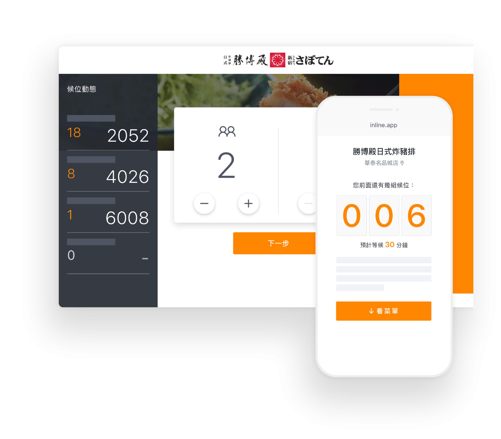

接待，不再手忙腳亂
Reception, no longer a hassle
以雲端作業將訂位流程自動化，
提高效率、減低錯誤的雲端管理系統。
泰國、美國及世界其他地區，並支援多國語系操作介面。
強大的生產力工具
inline 三大管理功能，提高訂位效率

訂位管理

資料彙整，多重顯示。
隨時都可快速瀏覽每日訂候位列表、桌位圖以及顧客資訊，訂位從各平台串連，皆多重顯示，一覽無遺。

⾃動確認訂位
顧客用餐前，系統再次自動寄送簡訊進行確認，降低人為疏失，訂位管理更有效率。

設定開放桌位時段
提供全客製化桌位配置圖，指定各時段可訂位人數，不怕超接顧客，還可以設定VIP桌，控位一手掌握。
預收訂⾦管理
inline 提供預收訂金功能，系統也與金流串接，顧客可直接信用卡線上付款；平板上隨時追蹤顧客繳交訂金狀況，帳務更順暢。

雲端運算管理排程
我們提供了強大的雲端資料庫系統，可即時更新資料，多平台同步運作，精準又安全，管理訂位更方便。

候位管理

多種顧客排隊登記方式
顧客除了可以使用 iPad 觸控、Kiosk 螢幕登記之外，也可支援 QR code 掃描報到及候位電視牆功能，幫助餐廳疏通排隊人潮。

⾃動安排候位時序
候位登記時，系統自動為顧客排號，每組客人都有自己專屬的一組候位序號，排隊報到沒煩惱。
顧客不需下載app
登記候位完立即傳送簡訊連結，顧客完全不需下載多餘的 app ，隨時查看現場候位排號狀況。

一鍵叩客
輪到該組客人後，餐廳一鍵呼叫顧客回店用餐，省去人工電話確認的時間，為餐廳提供更高的待客效率。
支援遠端監控
即使餐廳人員不在現場，手機只要連上網路，店家即可遠端監控訂候位狀態，安心度爆表。
顧客管理

顧客資料庫
餐廳可隨時調閱顧客跨餐廳、跨分店消費記錄，每筆訂候位都會存入後台，建立餐飲業龐大資料庫。

記錄顧客喜好
這位客人不吃辣？這位客人喜歡坐室外？inline 全部幫你記錄起來，餐廳可自訂客人喜好，往後對回頭客的新進訂候位就可以貼心應對！
統計數據管理
針對不同顧客，inline 提供輔助行銷、數據收集、統計報表等顧客關係管理工具，增加餐廳好感度，有效提高顧客回頭率。
正在使用inline的合作夥伴...
Hi餐廳老闆
此表單為提供餐廳試用系統，我們無法提供代訂服務
消費者訂位、訂餐請 > 查詢附近餐廳
inline 還有什麼強大之處？
立即免費試用inline
免費前兩週試用期，歡迎填寫表單聯絡我們，
我們會有專人盡快回覆您！
– 許禮麟 / 金田餐飲集團總經理